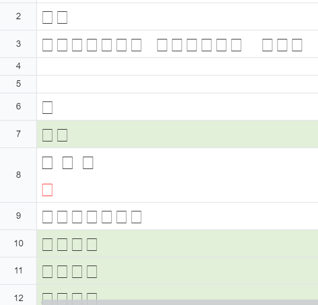
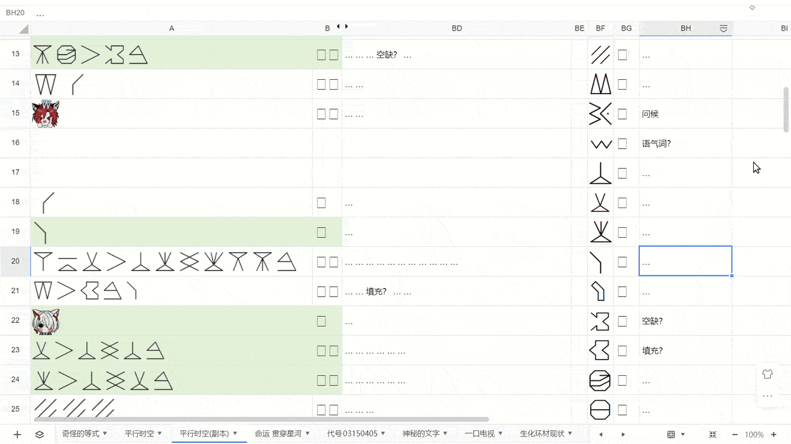
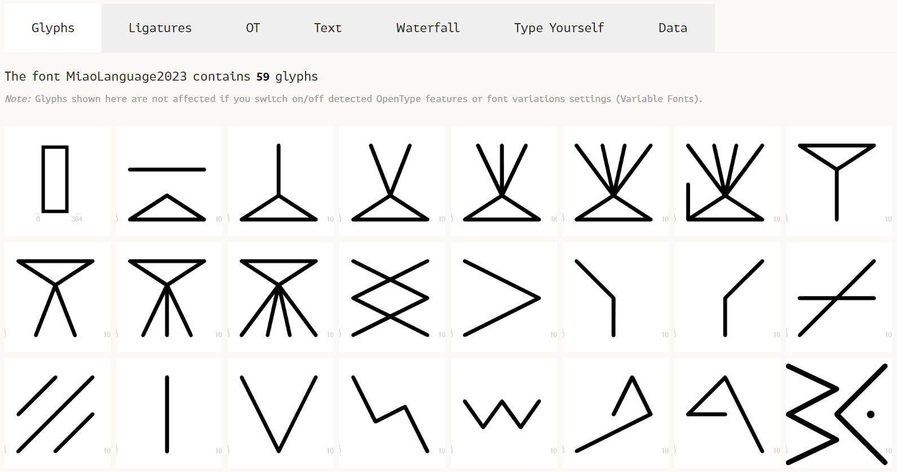
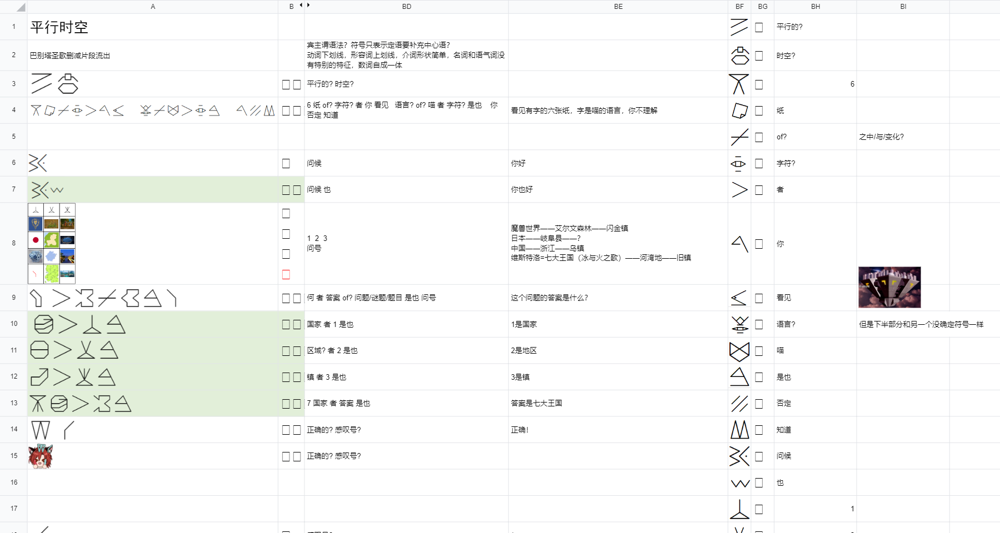

2023年12月30日23:59:45，随着Chrysl发现八卦与盲文的关系而解出Never Store，一道超长流程的题出现在了迷失城。
从睡梦中醒来时，我被这道因为没有“复制到腾讯文档”按钮而进度处于新建工作表（0/1）的新题深深地吸引，一边浏览一边狂喜。
……除了标题，一个字都不认识！
按照巴别塔圣歌的惯例，第一个字显然是问候……
它甚至比别的字大一圈。大概它真的是第一个被设计出来的字符。
跟游戏的近似线性流程不同的是，语言中的所有素材在一开始就全部呈现了。不一定必须，甚至不一定能够按顺序破译文段，也没有检查点机制保障在出题者预期的时机正确理解了应破译的字符。没有经过多重确认的字符，切记不可先入为主。
向下扫描全文，几乎总是在对话开头单独出现，在对话正题中从未出现过，方才真正确定了它的意义是无意义。与常常一起出现的或许是语气词之类的吧。
虽说不要盲目下结论，但在第一遍阅读时就能以溢出屏幕的感觉一眼确认的象形文字还有两个……
接下来就从容易入手的图片开始仔细阅读吧。
仔细观察第一框中的表格。第一列包含徽标、旗帜和象征，第二列是地图，第三列有水的照片。表头的三个字符很可能是描述列内容的，但从字形上看一点也不像，更可能只是甲、乙、丙的标记。从零开始的语言学题里怎么会有含义是甲乙丙的字符？大胆假设这三个字符其实是1、2、3。
左下角单元格的红色折线并不像某个国家的标志，而且它是可被选中的字符而不是图片。这个字符在对话中也出现了，有出现在句末的，有单独出现的，还有在表情中写满的。单纯只是出现在句末并不能说明什么，但配合表情图片确定了它就是问号。“”“”两句也能像“在？”“在。”这样解释，不过这有着与中文过于相似的语法的猜测被我暂且抑制了。
根据表情，可以确定表达肯定的意思，与问号对称的符号就像是感叹号，后续同样仅在句末出现，顺便也记一笔。
第一框中左边的喵应该是在出题，右边的喵解题，回答了1、2、3、问号所代表的元素。答句说成“1是××”和“××是1”都说得通，和是语法元素，具体内容暂时没有什么头绪。明明是一个字符表达一个词的语言，结构这么简单的句子竟然有一半字符是语法元素，看来语法上是有些怪东西在的。往下，有着同样句式的中的指的应该就是问号所代表的，“空缺”之类的意思。说不定是开，是关。大概是“正确！”的意思。
——你好。
——你好啊。
——[表格]空缺处应填什么？
——1是喵喵，2是喵喵，3是喵喵，空缺是喵喵喵。
——正确！
问号处要填的中包含1代表的。究竟什么答案才有如此巧合？或许应该先确认的含义。虽然第一列有两个是国家，但还有个魔兽世界，不知道1代表的是什么。
已解开和待解开的谜团都有些多了，这道不能复制到腾讯文档的题说不定能解完，是时候把进度整理到电子表格中，顺便让队友来一起脑洞了。活用公式功能，可以在电子表格中创造平行时空圣歌。
只是，当我把题目复制到腾讯文档时才发现，因为需要使用不支持的字体，所以所有文字都显示为方块。
怪不得这题不能一键复制到腾讯文档！
虽然看起来全是方块，但是这些字符在内部仍然拥有不同的编码，可以正常地用字符串函数处理。在一边列出文段中出现的所有字符和对应的词义猜测，另一边用公式将文段中的字符替换为对应的意思。最后，把文章和字符一个一个（苦力）地截图，贴到表格中以便查看。
| A | B | C | D | … | BD | BE | BF | BG | BH | BI | BJ | |
|---|---|---|---|---|---|---|---|---|---|---|---|---|
| 1 | 平行时空 | {=TRANSPOSE(BI1:BJ54)}
| [图片] | | … | |||||||
| 2 | 原文 | 字典 | 译文 | [图片] | | … | ||||||
| 3 | [图片] | | =SUBSTITUTE(B3,
| =BD3
| … | [图片] | | … | ||||
| 4 | [图片] | | … | [图片] | | … | ||||||
| 5 | [图片] | | … | [图片] | | … | ||||||
| … | … | … | … | … | … | … | ||||||
| 108 | [图片] | | … | |||||||||
这样一来，只要更新字典，原文右侧的机翻译文就会自动更新。
确认字符遗漏情况时，发现有一张表情图片里有一个文本中没有出现的字符。
单独处理太不方便了，想到字体文件里应该有这个字符，于是打开字体文件查看。安装了字体的话用字符映射表，没有的话也能用FontDrop!这样的工具查看字体中包含的字符。
首先映入眼帘的是.notdef十个连续的包含顶部或底部三角形的字符，其中的、、已有1、2、3的猜测。“语法已经足够奇怪了，数字不能再是其他进制了吧”，这样想着，顺手就给U+E000~U+E009标上了0~9。
这时的我和字体制作者都犯了一个错误：依赖连续的字符编码。MiaoLanguage2023不是用于日常书写的字体，不包含拉丁字母，只包含U+E000起的私用区符号。虽然喵语用到的字符字体都囊括了，但是字体包含的并不都是喵语的字符。
找到之后，还发现下列字符在正文中没有用到：、、、。数字没有全部用上是正常现象，单靠正文中已出现的字形也应该能推断出9的字形，而5大概只是正好不需要。另两个字符就不用推理了，反正也用不上，不过既然发现了，姑且还是在电子表格里记录一下。
标完数字后，第二框里出现了“2 … 1 … 1 …”和“3 … 1 … 2 …”，应该是1+1是2和1+2是3的意思。
还有意思不太对的“6 0 2 … 1 3 … 4 7 8 …”。或许是剧情需要，有错误的算式也不是没有可能。
——！
——？
——13+478=602，我算得对吗？
——？？？完全不对，你要知道1+1=2，1+2=3。
——喵喵喵，喵喵喵，吗？
——什么玩意。
——呜呜呜。
第六框里有很多颜色，现在发现还有很多数字，但不知道是什么意思，也不知道要做什么。不知道这片色块不是可以独立解开的谜题。
另外，flavor text中出现了数字7。flavor text应该是“阅读下面的六框内容，回答问题”这样的文本，但数字没对上。这么说来，“7”也许是暗示还有第七框，那里才是最终的谜题也说不定。
现在的状态是知道每一框里都有一些数字、一些标点、一些不知干什么用的语法词，简而言之就是听不懂在讲什么。我毫无头绪。
起初就感到标题下面字号特大的有些什么关系隐藏其中。一按Ctrl+F，发现全文中“”出现了17次，“”出现了17次，“”出现了17次。这说明了什么？这什么都没说明可以作为一个整体来翻译。
看起来就很像平行，但也不能排除喵语的平行时空的字面意思不是平行的时空。
译出平行时空后，发现有几框频繁提到平行时空。原以为标题的平行时空指的是所有人都说喵语的世界，可好像不只是这样。喵也会讨论平行时空吗？好像更加混乱了。
12月31日下午，随着在线表格的建立，Chrysl也加入了战斗。关于和的含义，由于强烈的巴别塔圣歌既视感，不由得猜测喵语和诗人的语言一样是宾主谓语序，用于分隔宾语和主语，是动词“是”。但Chrysl对的含义提出了一种全新的思路：“的”。
具体而言，的右侧是定语，左侧是中心语。译为“1的（中心语省略）是”。
这样一来，喵语语法可能是十分复杂的。在不知道是什么意思的情况下，哪边都确定不下来。
但是“的”的猜想很快就被消除了可能性，因为在毫无头绪了一圈回来后，我发现了一个惊人的事实：不需要读懂两只喵的对话，你可以自己通过图片解开第一框的问号……
这是Google识图，在分辨率如此低的条件下，做到了这些：
| 1 | 2 | 3 |
|---|---|---|
| 魔兽世界 | 艾尔文森林 | 闪金镇 |
| 日本 | 岐阜县 | ？ |
| 中国 | 浙江 | 乌镇 |
| 维斯特洛
七大王国 | 河湾地 | 旧镇 |
搜到七大王国的时候，立即确认了这一定是问号处要填的正确答案，一定是国家，而之前猜测为8的肯定是弄错了！第二列没有什么规律，但第三列似乎都是镇。根据后文出现的频繁程度，极可能是镇，以便拼出喵镇。
“1的是国家”现在看来就不太通顺了，所以只是宾语和主语的分隔符。
从字形上看，应该与疑问句有些关联。……“什么”！全文中只在问句中出现，代入看起来也通顺。
——你好。
——你好啊。
——[表格]空缺之中填什么？
——1是国家，2是地区，3是镇，空缺是七大王国。
——正确！
为了直接从自动翻译中读出有一定可读性的话语，在表格中实际为填写的是“者”，为填写的是“是也”，就会被自动翻译成“国家 者 1 是也”。为了不让被翻译成“什么 者”，又把的翻译改成了“何”。
标题的跟的右半边很像，表示空间概念的可能性提升了一些，暂且蒙在鼓里。
现在确认了是7，flavor text中的也更有可能是6，再加上未在正文中出现过，我感到可能并不是喵语，而是已废弃的设计，但残留在了字体文件中。
如果是5，是6，是7的话，第二框中的复杂等式就是13+467=502，虽然仍是不太对的样子，不过容我枚举一下……这在八进制下成立！
——！
——？
——13+467=502，我算得对吗？
——？？？阿巴阿巴，1+1=2，1+2=3。
——不不不，喵喵喵——吗？
——Oh no!
——悲。
隐藏的第七框的猜想破灭了，最终谜题应该在第六框，因为第六框结尾的两只喵都在疑惑，并且到现在也没看出那颜色和数字有什么规律。
知道了的含义后，大部分句子的结构已经明确了。但是，仍有很多形状简单的字符不知道含义。因为需要大量使用，语法元素和代词往往是形状简单的字符，而形状简单的字符目前还有很多没有破解：、、、、、。
第二框中的两句长难句“”和“”，每句都有两个；后续对话中，也频繁出现，看来这是一个相当重要的字符。的左右都是名词，可能是个介词。前面翻译时将其翻译为了“之中”，表示“在⟨左侧的名词⟩里面”，但这似乎在其他句子里不太解释得通。单纯从来看，也有“空缺之中填入”“谜语与密钥”“缺损变为完整”等诸多不同的合理解释。
从第三框起，出现了这一语法十分怪异的字符。大部分都出现在句末动词的左侧，唯独睡觉时的那句“”中的出现在了句尾。这是因为该句省略了动词吗？还是有什么特殊语法？但第三框存在的意义肯定不是用来教怎么睡觉的……总不会是出题时打错了吧？根据这个字符总是出现在动词旁边，猜测表示否定。
第四框的两只喵好像在讨论鸡镇，作为喵镇的平行时空。不懂的词汇太多，完全看不出个所以然。
第五框的三原色旁有，且在第六框色块下也出现了，最可能是颜色的意思。这个就不知道是什么东西了，第三中心医院属实有点抽象。
想要买提示，但不知道买第几框……等等，提示标题里说的是第×张纸——纸？
这没有任何纸张质感的网页，要从哪里知道这是纸啊！这不是新建图标手办吗！
虽然看不懂第三张纸一开始在讨论什么，但是从困倦的表情起，双方就都开始讨论睡觉了。第三张纸里有很多形的字符：、、、，还有表情里的。这些字符一定都与睡觉有联系。但是，第四和第六张纸上也有，却貌似没有与睡觉相关的讨论，第六张纸更是从第一句话以后就再也没有出现睡觉相关的字符。
是右边的喵先提出睡觉的，所以应该是“我睡”。形状简单的字符中，像名词那样使用的只剩和，基本可以确定是我，是你。“”单字符成句，或接，问候语也是如此，所以是睡觉的问候，即晚安。
这片乌云里现在有来自的正确、跟睡有关且在后面的对话中也出现了的一个动词、你，和不知道为什么独树一帜在句子最末端的否定。这句话应该是左边的喵对右边的喵的祝福，或许是因为祝福有特殊语法使改到了句末。可能是一个能同时用于睡觉和其他场合的词，猜想“清醒”。既可以说是睡觉醒来，又可以说是思维清晰不迷糊，这对于热爱谜题的喵来说再合适不过了。对喵镇的喵来说，说不定真的有个字符是谜题的意思呢。所以的意思大概是……
“你不醒得正确。”
好像有点怪，这可能就是喵文化冲击吧。
整理一下现在已知的字符的特征。
动词：。此外，从语法上分析，其他出现在句末的也是动词。共同点是下划线。
好像没有遇到形容词，但是和的共同点是上划线，且都能作形容词来解释，这大概就是形容词的标志。
数词：。共同点是顶部或底部的三角形。数词只有这八个，有没有特征都无所谓了。
语法用词、代词、标点等元素：。特征是形状简单。
名词：。没有什么特征。
其他：。也没有什么特征。
通过词性，彻底排除了是时空的可能。
为第三张纸购买了一个提示。
两只喵上来打了招呼，右面的喵问左面的喵有没有去某个地方。左面的喵解释了一些原因，并且表示自己没去。右面的喵介绍这个地方举办的某种活动，左面的喵表示疑问。右面的喵详细介绍了这次活动的主要内容。左面的喵表示震惊，并且对右面的喵的体力表示佩服。右面的喵表示自己累了困了，准备睡了，左面的喵道晚安，并发出了一句祝福，右面的喵回复了一个晚安。这张纸条的大多字符在其他纸条中可以找到破解线索，只有【某个地点】和【具体活动内容】以及【晚安的祝福】需要破解。【某个地点】是象形文字，结合前面的字一起看，想想在哪里见到过？一旦你知道了【某个地点】是什么，像房子一样的字符就是【某个地点】里面出现的东西。而【晚安的祝福】可以结合其他相似字符猜测含义。
详细到让人不敢相信这是4500小鱼干能买到的提示。这就是检查点吧！将提示与目前的翻译对照，确认了数个字符。
疑问句里不应该有否定，是否定的猜想从一开始就错了。那是什么？过了个灵感，发现如果是这样的话，一切都解释得通了……
为了自动翻译通顺，在表格中实际为填写的是“曾”。一句单独处理，译为“你将梦到真理”。
宾主谓，八进制，过去时和将来时字符相同。喵语，很奇妙吧？
就在我的时候，Chrysl一边翻译，一边填满了剩下的所有实义词。
有两个并排交叠菱形的字符有、、。上下划线只是表明词性不同。因为否定是三条斜线，猜测斜线表示反义。句子的结构提示是两个事物之间并列的关系。两个菱形形状一样，故如此猜测。
上划线表示形容词，下划线表示名词，那是什么词性？数词有顶部或底部的三角形，不是数词，但看起来与数字有关。第二张纸上的13+467=502用到了0~7的每个数字！大概就是数字的意思。
——！
——？
——13+467=502，题目是正确的吗？
——？？？阿巴阿巴，1+1=2，1+2=3。
——不不不，我题目中和你题目中的加法不一样，我题目中的每一个数字都不一样。题目是正确的吗？
——不是。
——哇呜。
好像双方的加法算法并没有什么两样。大概有加法以外的意思，最可能是“和”。应该是说和不同。实际上，因为不知道运算符优先级，这句句子还能解释为/()/，主要还是不知道是什么，没法判断。
看第三张纸。
——你好。
——你好啊。你之前去过中心塔吗？
——中心塔在喵镇的中心，我不曾在喵镇的中心，所以没去过。
——中心塔有谜题。
——什么？
——每个宝藏有一个谜题，要知道这些谜题的答案。每个宝藏在不同的区域，去了10个区域，知道了宝藏的谜题。
——！！什么！你去过10个地区？
——我睡了。
——晚安，你将梦到真理。
——晚安啦。
《喵镇奇谈》里有出现过“中心塔”三个字，虽然是在互动视频的选项里。结合后文的和第三中心医院，是象形的中心，是塔。不过“像房子一样的字符就是里面出现的东西”，重看视频时发现不是指宝藏，而是店铺。
第四和第五张纸上的内容已经能大致明确意思了。
——你好。
——你好。
——我做了个梦。
——你做了什么梦？
——梦到了喵镇的平行时空。
——平行时空是什么样子？
——平行时空中的样子和鸡一样。[图片]
——喵镇中的样子和喵一样，平行时空是鸡镇？
——平行时空不是镇，平行时空是国家。平行时空中的国家有34个区。
——喵镇一样！喵镇有34个区啊。
——平行时空中每个区和喵镇中每个区的样子一样。
——对的！
——在？
——在。
——平行时空有三种颜色。[图片]平行时空有三个中心。[图片]平行时空之前还有三个国家。[图片]
——之前是三个国家，现在只有一个？
第六章纸上出现了flavor text中出现过，但一直不知道是什么意思的和。虽然看起来很像眼睛，但是“看”已经相当确定地分配给了，所以排除了。是象形，也是象形也不过分，但翻译出来有点奇怪。
——我梦到带数字的纸啊。[表格]谜题的答案是什么？
——我不知道。我之前见过这10个颜色。
——你见过？在什么地方？
——在中心塔的谜题中。
——？
——每个店铺有一个谜题，每个谜题有一种颜色。
——每个店铺在不同的区域，跟平行时空的梦一样。
——看见了店铺的区域，就看到了平行时空的区域啊。
——喵的浮岛不知道答案，平行时空的浮岛就不知道答案啊。26个的浮岛知道，纸上的数字就是的数字。
——谜题的答案是什么？
——答案是？
十个地区和十种颜色对应着《喵镇奇谈》中的十个店铺。后台开启前，梦幻岛和迷失城共计26道题。说到26，就想到26个英文字母。
不过，喵的浮岛是什么？是梦幻岛吗？26个的浮岛又是什么？中心塔的十道题和浮岛26道题有什么关系？？
新的一年，从卡题开始！
第六张纸上的语气词也不知道想表现什么语气。我突然想到，语言学题里好像也不太应该有没有任何意义的语气词。
看来喵并不是把语气词当标点用的古代文人。
在翻译了许多句子后，的含义有些呼之欲出了。
填入of的那一刻，第六张纸上的纸上的文字自动解开了。是3 of 5，也就是3/5，提取五个字母中的第三个字母。看来26指的应该是英文字母，而不是浮岛上的题目数了。是字母？那么说不定跟浮岛没有任何关系。
连起来了，好像一切都连起来了。是“你看到有字的6张纸”，是“字是喵的语言”，是“你不懂”。直到最后才明白flavor text上写着“你不明白”，这真是……
……我们已经理解了整篇文章的全部内容，但是还是得不到答案。
浮岛有26道题的信息在这里应该没什么用了，只需要专注于预告片里的十道题。这十道题目在视频里出现时画面上都有彩色边框，与纸上的颜色对应。只是中心塔的十道题的答案都是9个字母，和这里的提取说明对不上。
| 颜色 | 店铺 | 答案 | 提取 |
|---|---|---|---|
| 绿 | Ever Store | newmarket | 3 / 5 |
| 蓝 | 八叶唱片 | loveradio | 1 / 5 |
| 红 | 大竹麻将馆 | onedollar | 1 / 9 |
| 黄 | 孤独游戏厅 | technique | 5 / 4 4 |
| 金 | 梦境定制小铺 | astronaut | 5 / 8 |
| 棕 | 解药·朝A晚C | ibuprofen | 5 / 5 8 |
| 银 | 谜雪冰城 | eggerland | 5 / 12 |
| 紫 | 杂然赋流形 | antiquing | 7 / 7 |
| 黑 | 夜猫咖 | peterbald | 3 / 5 |
| 白 | 功夫火锅店 | neverland | 5 / 8 |
修正了的翻译后，第六张纸上的第一句话就成了“我还梦到带数字的纸”，多出来的“还”十分耐人寻味。做梦的大概从头到尾都是同一只喵，所以要结合第四和第五张纸上的信息来看。
34个区域，三国合并，鸡……原来“平行时空”指的就是中国。
那么店铺的区域和中国的省级行政区又有什么关系呢？
Chrysl发现了《喵镇奇谈》中的每个店铺开头都有一段意义不明的环境描写，貌似可以对应上中国的省份。小爆了一下，得到了本题的最终答案：background。
| 区域 | 店铺 | 环境描写 | 省份 | 英文 | 提取 | 答案 |
|---|---|---|---|---|---|---|
| 西 | Ever Store | 朝圣 | 西藏？ | Tibet | 3 / 5 | b |
| 东 | 八叶唱片 | 村庄，写生圣地 | 1 / 5 | |||
| 西 | 大竹麻将馆 | 高楼，紧靠山，辣烧烤 | 重庆 | Chongqing | 1 / 9 | c |
| 西 | 孤独游戏厅 | 紫荆花 | 香港 | Hong Kong | 5 / 4 4 | k |
| 东 | 梦境定制小铺 | 璀璨明珠 | 上海？ | Shanghai | 5 / 8 | g |
| 北 | 解药·朝A晚C | 一望无际的草原 | 内蒙古？ | Inner Mongolia | 5 / 5 8 | r |
| 北 | 谜雪冰城 | 最为靠近极地，冰雕 | 黑龙江 | Heilongjiang | 5 / 12 | o |
| 东 | 杂然赋流形 | 水乡 | 江苏？ | Jiangsu | 7 / 7 | u |
| 西 | 夜猫咖 | 山脚下 | 3 / 5 | |||
| 北 | 功夫火锅店 | 高大威猛，圣人居所 | 5 / 8 |
……（或者你也可以在微信表情商城搜索【MiaoHunt2023】获得一些帮助）……
啊，MiaoHunt 2023表情包是什么？还有这种东西的吗？
所以其实并不是“正确”，而是“好”的意思。是“你将做好梦”。